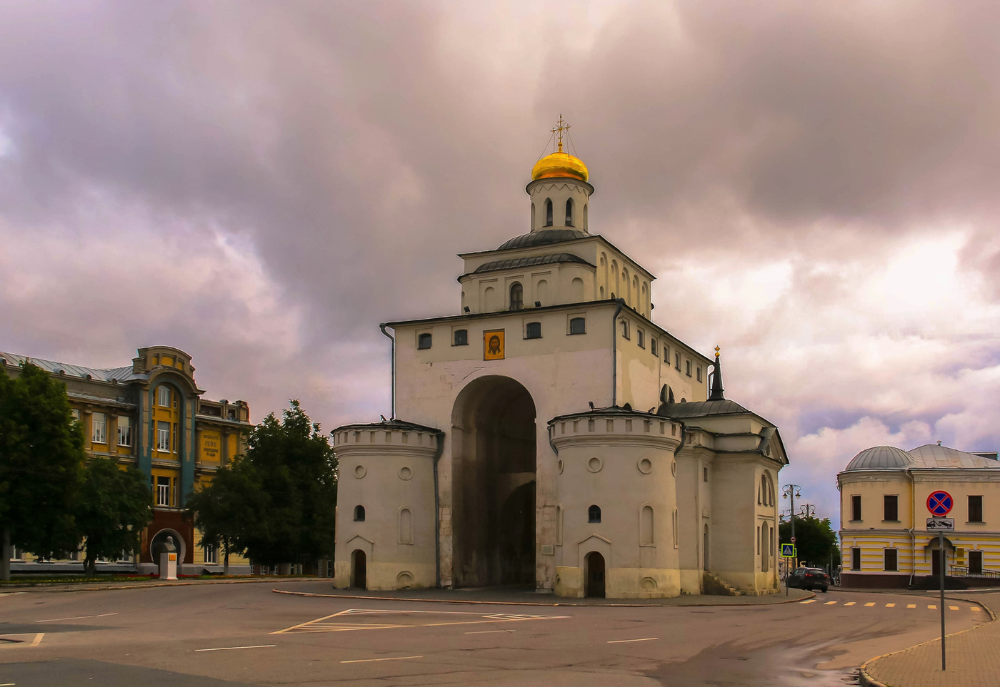
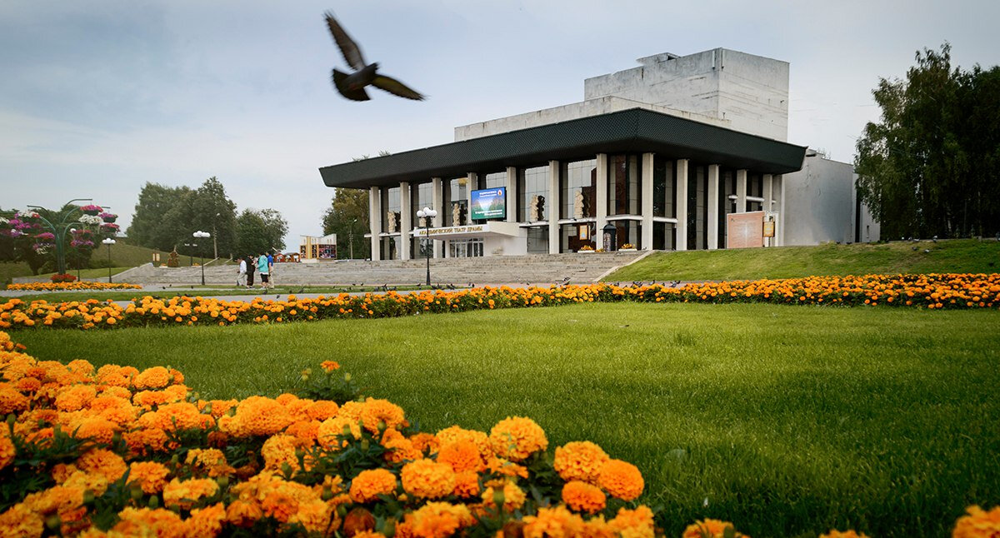
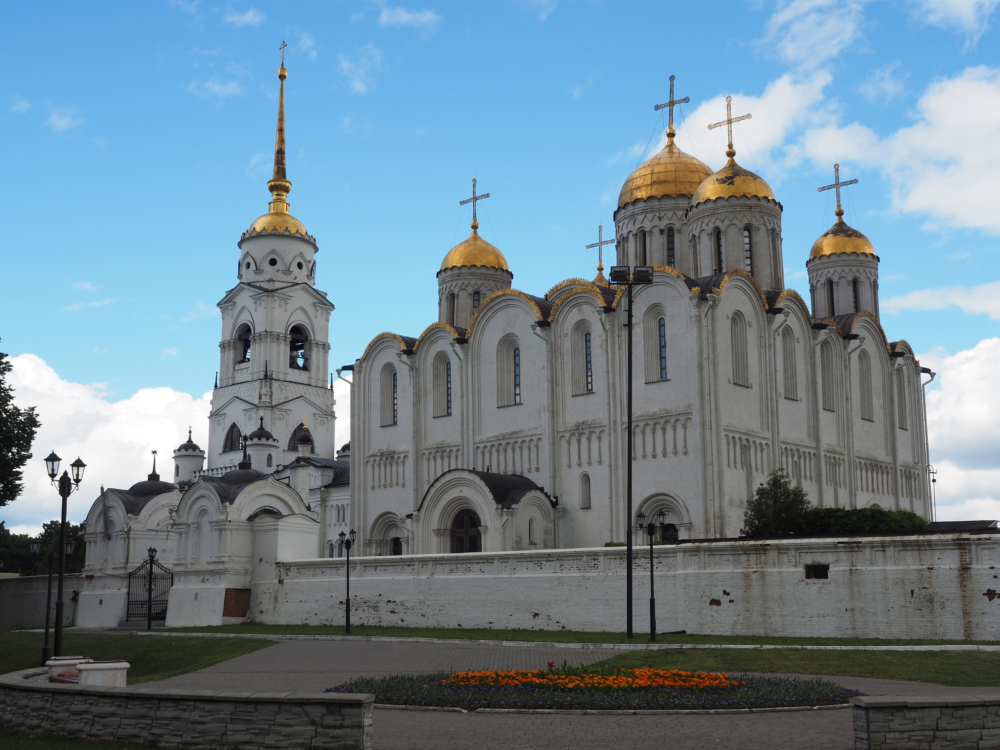

Владимир
Город Владимир впервые упоминается в летописи в 1108 году, его основал князь Владимир Мономах. Уже к середине XII века он становится столицей Владимиро-Суздальского княжества и самым влиятельным поселением Северо-Восточной Руси — даже Москва когда-то была лишь одним из его «пригородов». Сегодня Владимир — это один из крупнейших туристических центров европейской части страны.

Золотые ворота — редчайший образец древнерусского оборонительного сооружения. Ворота построили как главное боевое и проездное здание городской крепости, которую в середине XII века возвел во Владимире князь Андрей Боголюбский. Золотые ворота представляли собой мощную башню с 14-метровой аркой. Над сводом размещалась боевая площадка, а в верхней части башни — миниатюрный белокаменный Ризоположенский храм.

Театр во Владимире появился в 1848 году, когда актер Иван Лавров убедил местного губернатора в том, что театр необходим каждому городу. К 30-м годам XX века о владимирских постановках уже писали столичные газеты — спектакли театра имели большой успех.

Первое белокаменное здание Успенского собора было возведено в 1158–1160 годах по заказу владимирского князя Андрея Боголюбского. В 1185 году оно сильно пострадало от пожара и было существенно перестроено мастерами князя Всеволода III Большое Гнездо. В XV веке здание храма стало образцом для возведения Успенского собора Московского Кремля. В Успенском соборе сохранилась большая композиция «Страшного суда» 1408 года кисти Андрея Рублева и Даниила Черного.
